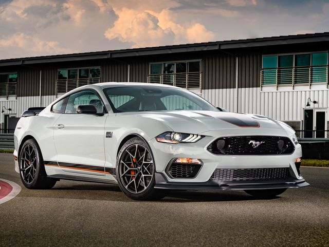

My Website
The Ford Mustang is a series of American automobiles manufactured by Ford. In continuous production since 1964, the Mustang is currently the longest-produced Ford car nameplate. Currently in its sixth generation, it is the fifth-best selling Ford car nameplate. The namesake of the "pony car" automobile segment, the Mustang was developed as a highly styled line of sporty coupes and convertibles derived from existing model lines, initially distinguished by "long hood, short deck" proportions.
 The Chevrolet Camaro is a mid-size[1][2] American automobile manufactured by Chevrolet, classified as a pony car[3][4] and some versions also as a muscle car.[5][6] It went on sale on September 29, 1966, for the 1967 model year and was designed as a competing model to the Ford Mustang. The car shared its platform and major components with the Pontiac Firebird, also introduced for 1967.
The Chevrolet Camaro is a mid-size[1][2] American automobile manufactured by Chevrolet, classified as a pony car[3][4] and some versions also as a muscle car.[5][6] It went on sale on September 29, 1966, for the 1967 model year and was designed as a competing model to the Ford Mustang. The car shared its platform and major components with the Pontiac Firebird, also introduced for 1967.